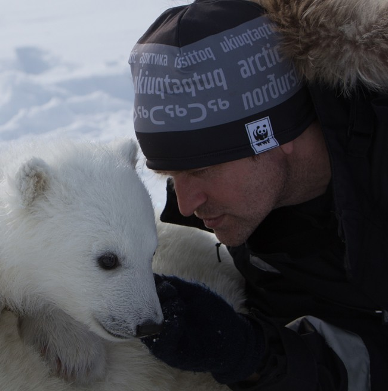

|
 |
WWF recognizes the urgency of protecting habitat for polar bears as they rapidly lose their sea ice habitat from climate change. They support the identification and protection of important polar bear habitats (denning areas and movement corridors, seasonal feeding areas/times, and key resting areas during the ice-free period). As well as they are supporting research to identify high-value habitat areas - areas where the bears feed, den, and give birth - and work with partners to conserve these places. WWF advocated for the creation of Polar Bear Pass National Wildlife Area in Canada’s High Arctic, and the Russian Arctic Park on the northern part of the island of Novaya Zemlya above Russia. We are involved in many more such plans. WWF has provided extensive financial support to the Wrangel Island Nature Reserve, known as the “polar bear nursery” for its high concentration of polar bear maternity dens. WWF won Wrangel Island as a UNESCO World Heritage Site in 2004 and in 2012, successfully advocated for the significant expansion of a marine buffer zone around Wrangel Island and its smaller neighbor, Herald Island.
____________________
| |
| Let's save |
| the |
| Polar Bears |
|____________________|
(\__/) ||
(•ㅅ•) ||
/ づ
|
| HARDWARE | ESTIMATED BUDGET |
|---|---|
| Make Den | $1.5 million |
| Movement Corridors (during the ice-free period) | $4 million |
| Seasonal feeding areas (during the ice-free period) | $0.3 million |
| High-value habitat areas | $3 million |
| Maternity dens | $0.2 million |
| National Wildlife Area in Canada’s High Arctic | $0.1 million |
| Russian Arctic Park on the northern part of the island of Novaya Zemlya above Russia | $0.5 million |